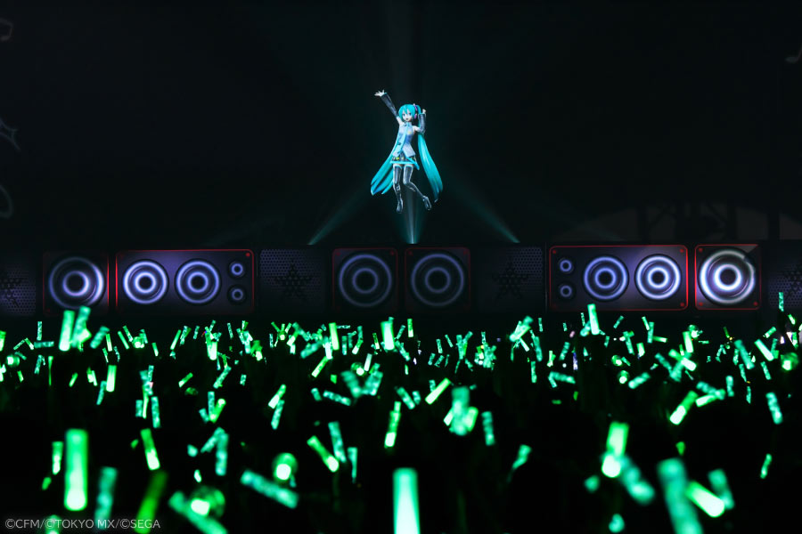
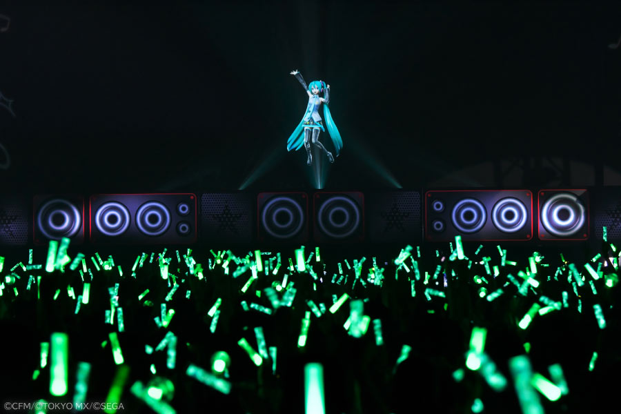

Development and Use
Hatsune Miku is referred to as the first Vocaloid, and she is one of the many voice banks released for the singing voice synthesizer software. Her singing is sampled from voice actress Saki Fujita, whose voice is separated into controlled syllables to be formed into the desired sentences or sounds.
Rise to Stardom
So, why exactly is Hatsune Miku so popular? There are a few reasons for this, but two stick above the rest: accessibility and content. Anyone can use her, much like one would an instrument, and anyone who wants to make music is able to do so with a familiar voice that has a dedicated fanbase.
Because so many people were making music with Hatsune Miku at the forefront, her popularity snowballed much faster than if it was just one person producing songs. These 'Producers', sometimes shortened to just 'P's, have created songs totaling hundreds of millions of views across different platforms. See section 3 for some of the all-time most popular ones!
Most Popular Hatsune Miku Songs By Viewership
- The Vampire by deco*27 (111M)
- God-ish by Pinnochio-P (109M)
- Love Me, Love Me, Love Me by Kikuo (107M)
- DUNE by HACHI, also known as Kenshi Yonezu (102M)
- Mesmerizer by Satsuki (99M)
Some of Miku's Most Popular Projects and Collaborations
- Magical Mirai
- Project Sekai: Colorful Stage
- Louis Vuitton & Marc Jacobs
- Project Voltage
- Coachella
- Lady Gaga
- Miku Expo
Gallery
 
